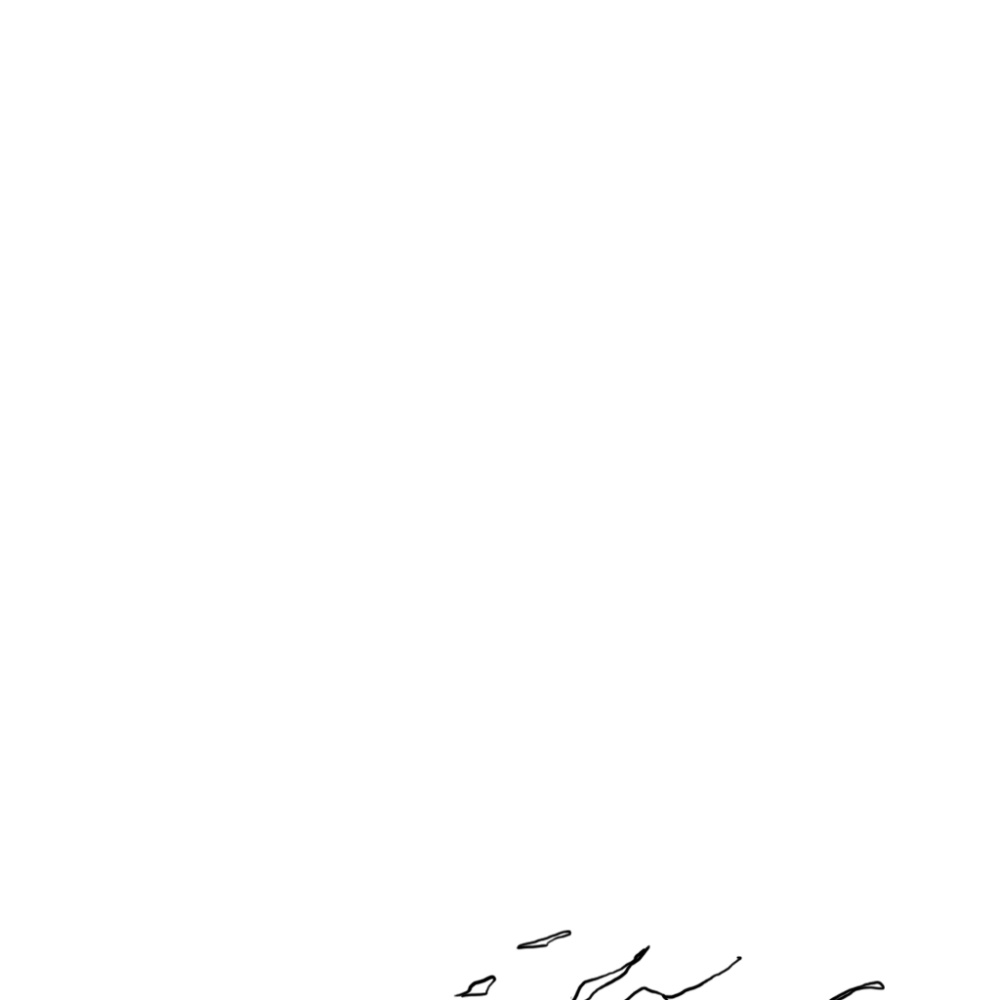

Perennial
(click or use the arrow keys to turn the page)
Acknowledgements
I am endlessly grateful for everyone who has supported the porous membrane enclosing this project.
In particular, I wish to thank: my peers and faculty at UCLA's Design Media Arts program, who have met me at the boundaries of my practice and nudged me past the threshold; my co-conspirators at Tiny Tech Zines, for centering care as praxis; and my friend Derek Miranda, whose obsession with light and sun became the generative force for this book.



a snow-covered slope with a
snow-covered forest


a view of a mountain range in the water


a black and white photo of a giraffe


a view of the ground from the ground


a flock of birds sitting on top of a tree
a black and white photo of a bird on a tree branch
a flock of birds perched on top of a mountain
a close up of a tree branch
a tree branch in the middle of a forest
a black and white photo of a dead bird
a black and white photo of a tree in the woods


Perennial uses bindery.js to format this website into an online book. The images are a combination of cyanotypes I made during quarantine, and machine-generated pictures. The text was made with RunwayML and handwritten notes on the back of family photos.